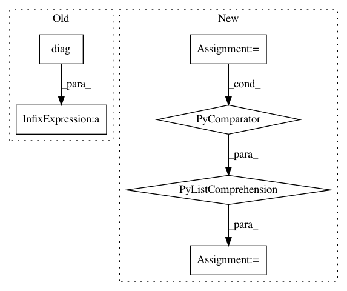

8c40ed8fb56baef7ab5ce8d5ed85bb10e4f09174,gpytorch/lazy/kronecker_product_lazy_tensor.py,KroneckerProductLazyTensor,root_decomposition,#KroneckerProductLazyTensor#Any#,199
Before Change
evals, evecs = self._symeig(eigenvectors=True, return_evals_as_lazy=True)
// TODO: only use non-zero evals (req. dealing w/ batches...)
f_list = [
evec * eval.diag().clamp(0.0).sqrt().unsqueeze(-2)
for eval, evec in zip(evals.lazy_tensors, evecs.lazy_tensors)
]
F = KroneckerProductLazyTensor(*f_list)
return RootLazyTensor(F)
After Change
if self.shape[-1] <= settings.max_cholesky_size.value():
return super().root_decomposition(method=method)
root_list = [lt.root_decomposition(method=method).root for lt in self.lazy_tensors]
kronecker_root = KroneckerProductLazyTensor(*root_list)
return RootLazyTensor(kronecker_root)
@cached(name="root_inv_decomposition")
def root_inv_decomposition(self, initial_vectors=None, test_vectors=None):
In pattern: SUPERPATTERN
Frequency: 3
Non-data size: 6
Instances
Project Name: cornellius-gp/gpytorch
Commit Name: 8c40ed8fb56baef7ab5ce8d5ed85bb10e4f09174
Time: 2020-12-16
Author: wjm363@nyu.edu
File Name: gpytorch/lazy/kronecker_product_lazy_tensor.py
Class Name: KroneckerProductLazyTensor
Method Name: root_decomposition
Project Name: deepfakes/faceswap
Commit Name: 7bdaa81cbef16d3626b3044bfe5c279120a9c0a0
Time: 2019-09-28
Author: 36920800+torzdf@users.noreply.github.com
File Name: lib/model/initializers.py
Class Name: ConvolutionAware
Method Name: _symmetrize
Project Name: cornellius-gp/gpytorch
Commit Name: 348122d499073a7a58b21d6e5544bc4b47a9ee94
Time: 2020-06-26
Author: wjm363@nyu.edu
File Name: gpytorch/lazy/kronecker_product_added_diag_lazy_tensor.py
Class Name: KroneckerProductAddedDiagLazyTensor
Method Name: inv_quad